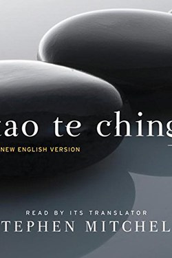

Library › Self-Improvement
Tao Te Ching — Summary & Key Lessons

Eighty-one verses on the way of water: the oldest manual for leading without forcing.
📖 OPEN THE FULL INTERACTIVE BREAKDOWN →🌐 Read it in Hindi, Hinglish, Gujarati, Tamil & 22 more languages — free, with audio.
💡 The Big Idea
The Tao Te Ching is 81 short poems on the 'Tao' — the way things work. Its paradoxes are its method: the valley is more useful than the peak; the soft conquers the hard; the leader who leads like water, without forcing, wins everything. Wu wei — action without forcing — is not passivity but perfect timing, like a surfer with the wave. The book's quiet radicalism: most struggle is over-effort; most victory is alignment.
🧠 The 8 Key Lessons
Lesson 1: The Water Way
Verse 8: Like Water
Lao Tzu's master image: water benefits everything and competes with nothing; it seeks the low places no one wants, and yet nothing is harder than it. The lesson for temperament: flexibility beats force, and the person willing to take the low place gains the deepest ground. Water's power is not aggression — it is persistence and adaptability.
📖 Example: The negotiator who bends on small points and holds the essential wins more than the one who fights every inch. Read the full example →
⚡ Do this: In one conflict this week, act like water: yield where it costs nothing, persist where it matters.
Lesson 2: Wu Wei: Action Without Forcing
Verse 37: Non-Doing
Wu wei is the book's most misunderstood idea: not inaction, but action that fits — like a sailor trimming sails instead of fighting the wind. The sign of mastery is effortlessness; the sign of struggle is forcing. The practical question: am I pushing the river, or am I steering with it? Most burnout is the former.
📖 Example: A manager who hires well and sets direction (wu wei) builds more than one who micro-manages every task. Read the full example →
⚡ Do this: Pick one task you are forcing; find the version that aligns rather than fights.
Lesson 3: Soft Beats Hard
Verse 76: The Lesson of Life
Things that are alive are soft and supple; things that are dead are stiff and rigid. Grass bends in the storm and survives; the rigid tree snaps. Lao Tzu applies it socially: the inflexible diplomat fails, the brittle leader breaks, the proud person falls. Strength you can show is strength you can spare; the truly strong do not need to prove it.
📖 Example: The startup that pivots survives the shift that kills the one rigid on its original plan. Read the full example →
⚡ Do this: Name one place where you are rigid out of pride — and bend deliberately this week.
Lesson 4: The Empty Vessel
Verse 11: The Use of Emptiness
A clay pot is useful because of the empty space inside; a room because of its hollow centre; a wheel because of the hole in the hub. The usable part is the empty part. Translated: agendas, schedules and egos that are full leave no room for what arrives; the empty hour, the open question and the quiet mind receive the world.
📖 Example: The leader who leaves gaps in the plan lets the team's intelligence fill them — the plan works better, and grows a team. Read the full example →
⚡ Do this: Create one intentional empty slot this week: an hour, a question, a silence in the meeting.
Lesson 5: The Leader Who Isn't Noticed
Verse 17: The Four Leaders
Lao Tzu ranks leaders: the worst is feared, the next is loved, the next is praised — and the best is barely known, because the people say 'we did it ourselves'. Great leadership removes the leader from the story: the win is shared, the credit flows, the system works without the hero. This is the deepest modern lesson of the book.
📖 Example: The founder who makes the team feel the success as their own gets loyalty no performance bonus can match. Read the full example →
⚡ Do this: In your next success, name the team and disappear from the credit line; in the next failure, appear.
Lesson 6: The Uncarved Block: Simplicity as Strength
Chapter 15, 19, 28
The Tao's image of pu — the uncarved block — is the original self before roles, brands and image: plain, whole, and full of possibility. The carved figure can never be anything else; the block can become everything. The sage returns to simplicity, strips away the show, and in doing so becomes more powerful than the emperor who must protect an image.
📖 Example: A leader who needs no title and defends no image moves through conflicts like water — no surface for the blow to land on. Read the full example →
⚡ Do this: Strip one ornament from your life this week — a title you quote, a label you wear, a trophy you display — and feel what remains.
Lesson 7: Knowing When to Stop
Chapter 9, 44, 46
The Tao's anti-greed verses are unambiguous: the pitcher overfills, the blade over-sharpens, and 'he who knows when to stop is safe.' Every excess carries its own reversal — the peak is the beginning of the decline. The sage stops one notch short, and that notch is the whole art.
📖 Example: Fortunes, empires and reputations that keep growing eventually break at the exact point where growth became the only goal. Read the full example →
⚡ Do this: Name the one thing you are overdoing — and stop one notch short of your usual maximum, today.
Lesson 8: The Sage Ruler: Leading Without Controlling
Chapter 17, 57, 66
The Tao's politics are the opposite of force: the best leader is one the people barely know exists; when the work is done, they say 'we did it ourselves.' The sage leads from behind — feeds, shelters and steps aside — and because no one feels ruled, no one needs to rebel.
📖 Example: The coach whose team believes it achieved its own victory; the founder whose company runs without her — leadership invisible in victory, felt in the result. Read the full example →
⚡ Do this: Hand one outcome entirely to your team or family this month — and let them own the credit without a correction.
✅ 5-Step Action Plan
- Act like water in one conflict: yield cheap, persist dear.
- Convert one forcing task into aligned action.
- Bend one rigid stance deliberately.
- Create one empty slot weekly — hour, question or silence.
- Give one win away fully and stay for one loss publicly.
⚠️ When This Doesn't Work
The verses are ambiguous by design — any reading is partly projection, and 'wu wei' can be misused as an excuse for passivity or power abuse. Read it as poetry with a practical spine, not as a rulebook.
💀 The Graveyard Proves It
⚗️ Qin Shi Huang — The Emperor Who Drank Immortality to Death. Burn: His life, at 49 Read the full case study →
💬 Best Quotes from Tao Te Ching
- “The Tao that can be told is not the eternal Tao.”
- “The softest thing in the world overcomes the hardest.”
- “A leader is best when people barely know he exists; when his work is done, his aim fulfilled, they say: we did it ourselves.”
Interactive version: mark lessons as read, listen in your language, share quote cards.